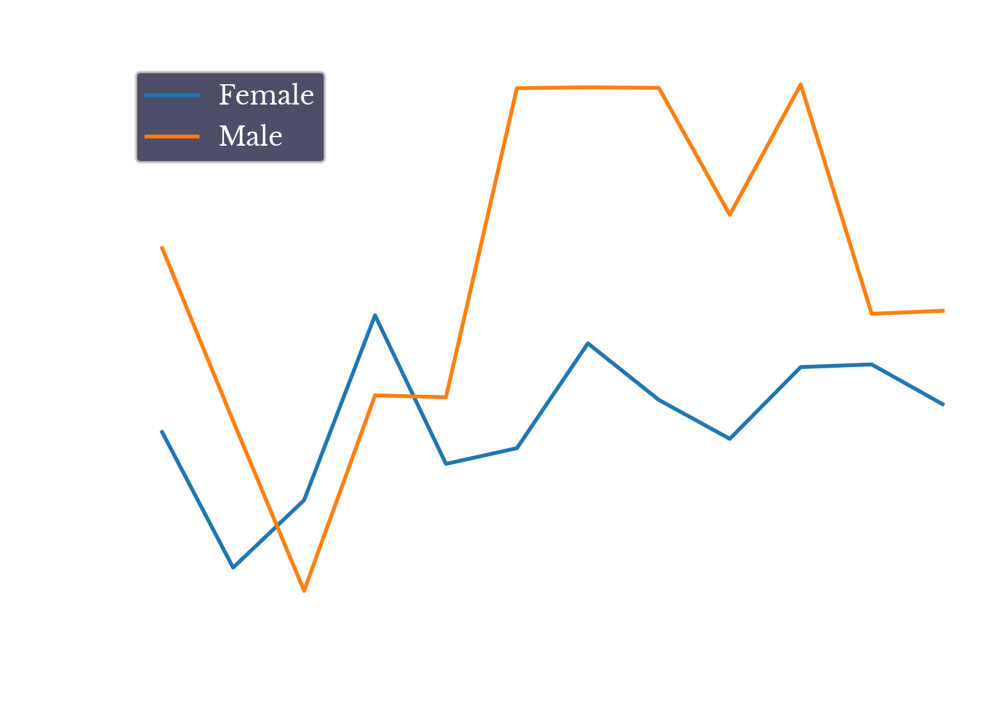

Figure 1: Circulatory Deaths by Year
As circulatory deaths have generally been in decline, in percentage terms, over the entire period, the valley-like shape is likely due to changes in underlying population demographics. For instance, the baby-boomer generation approaches the U.S. median life expectancy during this period, which could explain some of the increase. Regardless, it is important to account for this change when examining the potential impact of the Coronavirus Pandemic.Figure 2: Increases in Circulatory Deaths in 2020
From Figure 1, it is apparent that circulatory deaths significantly increase in both the spring and fall of the 2020. This is consistent with the understanding that Covid-19 infection significantly increases the risk of cardiovascular disease [1]. An interesting point is that the spike of over 7500 excess deaths in the spring of 2020 surpasses that of later increases despite the official case counts being lower over that period. This discrepancy may be due to the relative reduced availability of testing and/or increased virulence of the earlier strains active during the period.Figure 3: Increases in Circulatory Deaths Under 50 in 2020
Figure 3 shows similar plots for only those under the age of 50. As can be seen, similarly aberrant increases occur in the younger group. However, the second plot shows that the actual count of records is smaller, reflecting both the reduced size of the age group and reduced occurrence in the younger population. In summary, there is a significant increase in circulatory deaths in those under 50, though in overall terms in is still a small portion of the overall age group.Figure 4: Increases in Circulatory Deaths Under 40 by Sex
Figure 4 further limits the population to those under age 40 and computes z-scores for men and women separately. In the younger age group, the increase appears to be greatest in males, with a significant increase occurring and largely persisting throughout the second-half of the year.
Figure 5: Increases in Circulatory Deaths Under 40 in 2020
In general, evidence suggests that men tend to be impacted by heart disease earlier than women on average and this data from the first year of the Covid-19 pandemic appears to corroborate this.Figure 6: Breakdown Circulatory Death Increase by ICD-10 Code
Finally, Figure 6 shows the ICD-10 codes witnessing the most significant increases from 2019 to 2020. Z-scores are again computed using the 2010-2019 data and the color of each bar indicates the standard deviation of the yearly changes over this period. Bar charts are made for both the entire population and for those under 50. There are many commonalities between the two graphs, though the magnitude of increase for some conditions like pulmonary embolism is larger in the sub-50 group.{kind=link}
{kind=link}
{kind=link}
{kind=link}
{kind=link}
{kind=link}
{kind=link}
{kind=link}